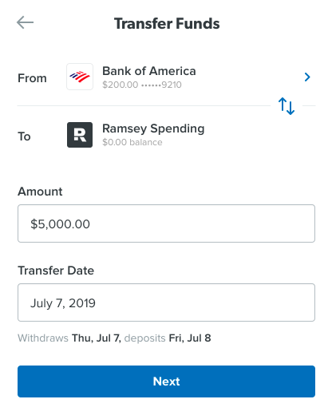
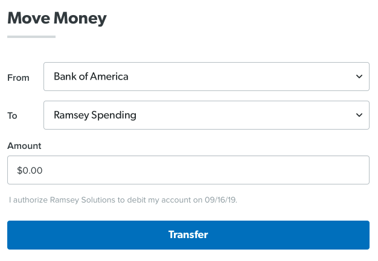
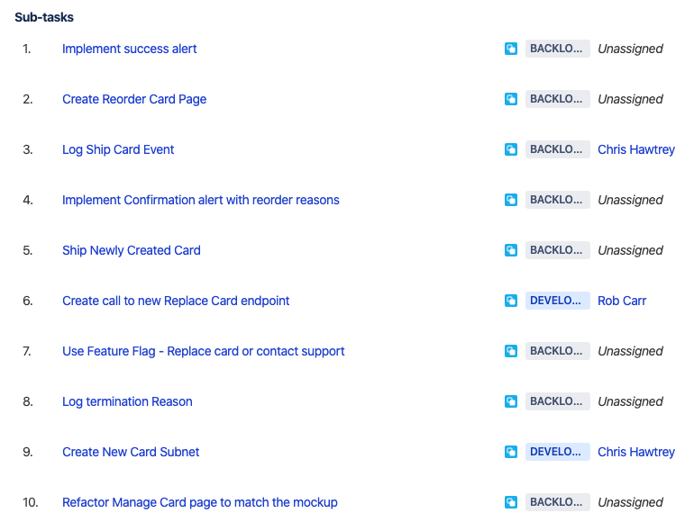
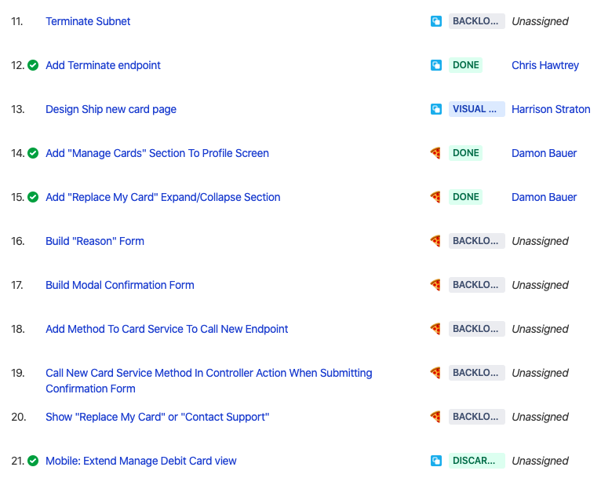

work
INTRO:
Hi, I'm Damon Bauer. I'm a developer on the Gazelle Debit Card team. I've been at Ramsey Solutions for 5 1/2 years. I started working on daveramsey.com, then moved to EveryDollar where I worked on the browser app for about 3 years.
This is a talk about how I do work. Most of these ideas are not mine, but I've learned them over my time here.
There's a good chance you've heard of, or even practice, a lot of what I'm going to talk about. My hope is that everyone can find at least _something_ to try and improve our code, processes and end products.
One thing you'll probably notice as I speak is that this talk has almost nothing to do with the actual code you write. This talk has much more to do with how you communicate, think about problems, and find solutions that serve your team, the business, and ultimately the users of your code.
******** FIND A GOOD EXAMPLE OF A FEATURE THAT WE BROKE DOWN ********
part 1: design
How do we break this work down?
ruthlessly cut scope
part 1: design
* Alongside designers and product managers, ask these questions:
* what can we agree on that is the smallest piece of work?
* what can we _not_ ship?
* what can we get away with _not_ doing?
* Designers push the boundaries of our UI's. They challenge our assumptions, they question why something is technically not possible. This is a good thing! This is your chance to challege them! It's not a fight or a power struggle; it's an exercise in give and take and learning what's imperative to keep vs. what's a "nice to have".
* Once you've cut scope, ensure these 3 things are true with that smallest piece of work.
provide
some user value
part 1: design: ruthlessly cut scope
The most important thing to ensure is that this new piece of work still provides user value.
If the user can still perform the task they need, you're on the right track. Now it becomes a discussion with designers to ensure what will be delivered is an acceptable first iteration.


part 1: design: ruthlessly cut scope
Here are 2 screenshots from a "transfer funds" feature we built. The goal was to enable a user to transfer funds from a connected bank account into their Gazelle account. On the left was the mockup, on the right was what we delivered as a 1st iteration.
Things we cut included: bank icons, custom select box, account balances & numbers, to/from toggle, schedule transfer, withdraw & deposit estimates.
This was around 4 months ago... and we're still using what's on the right. We'll eventually get to improving it, but we're solving more important problems right now.
don't box yourself in
part 1: design: ruthlessly cut scope
The small piece of work should help build a foundation to help you iterate quickly.
ship quickly & learn
part 1: design: ruthlessly cut scope
* what can you ship _fast_? How can you use your first iteration to learn?
before code
part 1: design
* Now that we have an understanding about _what_ we're trying to build, let's talk about building it.
* Pull Requests _should be_ the manifestation of all the planning your team has _already_ done & agreed to before touching code.
get feedback early
part 1: design: before code
* Use your team as a sounding board to discuss ideas, tradeoffs, work through logic
share context
part 1: design: before code
* Think of just some of the reasons why you might be out of the office or even away from your desk. Sick time, vacation, DMV, meetings (this one included)... there are plenty of times where a teammate could pick up where you left off. This is why planning the work with your team is crucial. Everyone should have a decent understanding of what we're building and a pretty solidified idea on how.
avoid costly mistakes
part 1: design: before code
* If you make one big PR that has a concept baked in that is "wrong", it's very difficult to change.
* However, in the scenarios I'm proposing, your team has agreed on how to build something and everyone has the context of what we're building. Also, you'll be making very small PRs. These 3 pieces make it trivial for a teammate to call out a "wrong" concept & it's also easy for you to fix it before it is proliferated throughout the code.
artifacts
is/is not
part 1: design: artifacts

part 1: design: artifacts: is/is not
* Intended to provide a high level overview about the scope upcoming work.
* Helps decide what to include & what to exclude by focusing attention by providing distint boundaries.

part 1: design: artifacts: is/is not
diagrams
part 1: design: artifacts

part 1: design: artifacts: diagrams

part 1: design: artifacts: diagrams
design docs
part 1: design: artifacts

part 1: design: artifacts: design docs
* Explain the "what", add documentation & list proposed subtasks.
* By reading this document, anyone on your team should be able to understand what will be worked on & how you plan to approach implementing it.
* Pieces:
* JIRA ticket link
* High level summary
* Diagrams
* Proposed Subtasks
part 2: always be shipping
deliver
something
part 2: always be shipping
* Aim to ship some part of a feature before it's polished or complete.
why
part 2: always be shipping
low commitment
part 2: always be shipping: why
feedback
part 2: always be shipping: why
avoid potentially unneeded work
part 2: always be shipping: why
metrics
part 2: always be shipping: why
how
part 2: always be shipping
tickets as user value
part 2: always be shipping: how
Tickets should be written so as they move across the board, user value is being delivered. On Gazelle, we make a parent ticket that describes the feature that has all the acceptance criteria, testing notes & user stories. Then, we make sub tasks that we'll use to track our work. So the parent ticket acts almost as an "epic".
It's common for a ticket to have 10-15, sometimes 20, subtasks if it's a brand new feature.


part 2: always be shipping: how
plan ahead
part 2: always be shipping: how
small PRs
part 2: always be shipping: how
small PRs - why?
part 2: always be shipping: how: small PRs
faster & more thorough reviews
part 2: always be shipping: how: small PRs - why?
easier to understand
part 2: always be shipping: how: small PRs - why?
* both the actual changes in the PR AND how the changes fit into the larger system
easier to course correct
part 2: always be shipping: how: small PRs - why?
fewer bugs, merge conflicts, & context switches
part 2: always be shipping: how: small PRs - why?
code is shareable faster
part 2: always be shipping: how: small PRs - why?
small PRs - how?
part 2: always be shipping: how: small PRs
hidden URL
part 2: always be shipping: how: small PRs - how?
hidden UI
part 2: always be shipping: how: small PRs - how?
* div, button click, gesture
feature flags
part 2: always be shipping: how: small PRs - how?
* custom, optimizely rollouts
wire it up last
part 2: always be shipping: how: small PRs - how?
* Write business logic first. Usually the last PR in a set is "wiring it up", which is tiny.
commit messages
part 2: always be shipping: how
more detail is better
part 2: always be shipping: how: commit messages